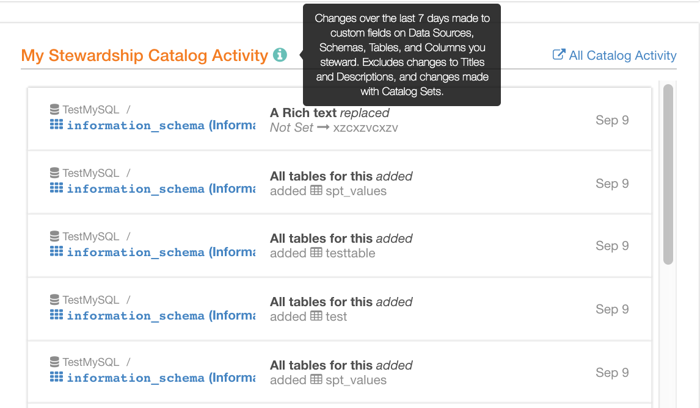
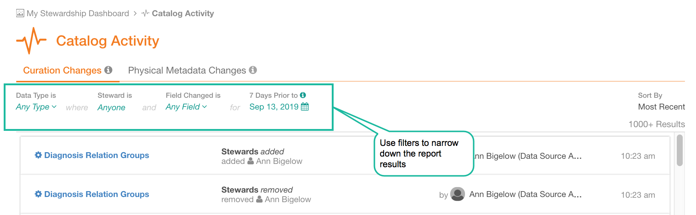
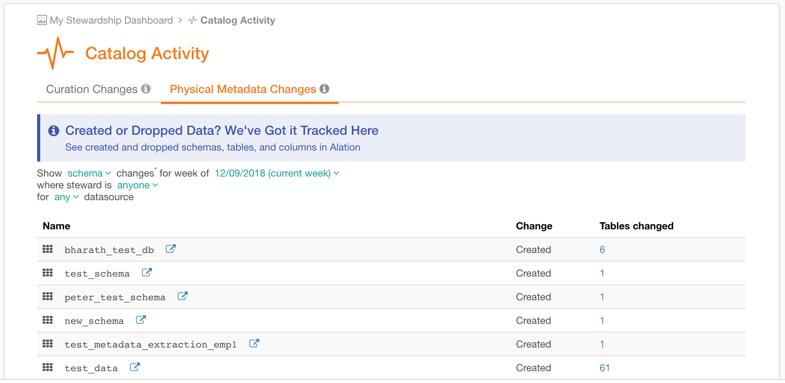
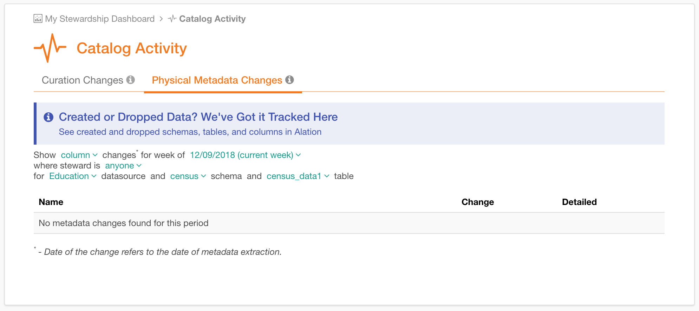

Working with the Catalog Activity Report¶
Alation Cloud Service Applies to Alation Cloud Service instances of Alation
Customer Managed Applies to customer-managed instances of Alation
Available from release V R4 (5.8.x)
To view the changes in the data object structure and to check on the continuous curation effort, you can refer to the Catalog Activity report. Catalog Activity report will be available if My Stewardship Dashboard is enabled in Alation.
The Catalog Activity report can be accessed by users wearing the Data Steward/Curator Hat. (For details, see Hats in Alation ).
The Catalog Activity report captures both changes to the physical metadata of data objects and updates to the properties and custom fields of both Data Sources and their child objects, for example:
Tables created and/or dropped in a schema (physical metadata change)
Columns added to or removed from a table (physical metadata change)
Data type of a column changed (physical metadata change)
Custom field values changed for a specific object by a specific user
Starting with V R6 (5.10.x), custom field values changed through a catalog set
Note
In V R4 (5.8.x) changes to such fields as Title and Description are not included in the Catalog Activity report.
Starting with V R5 (5.9.x) changes to Title and Descriptions are part of the report.
Starting with release V R6 (5.10.x), changes made through catalog sets are also included.
The Catalog Activity report is available in two views: a personalized view for the logged-in user on My Stewardship Dashboard and the full view across all data sources on the dedicated Catalog Activity page.
Data Steward Personalized View¶
On My Stewardship Dashboard, Catalog Activity report is filtered to only display changes that affect Data Sources where the logged-in user is steward.
Note
To assign someone as a steward to a data source, add this user as a value to the Stewards field on a data object:
Data Source
Schema
Table
Column
The Catalog Activity report on My Stewardship Dashboard includes information on:
Schemas, Tables, and Columns affected by changes to custom fields - note that Title and Description fields are only included in the report starting with version V R5 (5.9.x); and changes shared from catalog sets are only included starting with version V R6 (5.10.x)
Details of the change
Time of the change
To open My Data Stewardship dashboard,
Sign in to Alation and make sure to wear the Data Steward/Curator hat.
On the main toolbar, click Curate
Click My Stewardship Dashboard. The Catalog Activity report will be available on this dashboard.
Note
The Curate menu will be available if
My Stewardship Dashboard is enabled in your Alation instance
You are wearing the Data Steward/Curator hat
Catalog Activity Report view on My Stewardship Dashboard (V R6):
Viewing Field History¶
You can view custom field history right from the Catalog Activity report by hovering over a row and clicking History for this row. For details on field history, see Viewing Field History.
Full View Catalog Activity Report¶
To view the full report on all catalog activity happening in Alation,
Sign in under the Data Steward/Curator hat.
On the main toolbar, click Curate.
In the menu that opens, click Catalog Activity. The Catalog Activity page will open.
Alternatively, you can go to the full view right from My Stewardship Dashboard by clicking All Catalog Activity icon in the top right corner of the personalized report view.
The full report features two separate tabs:
Curation Changes tab that lists changes to custom fields except for Title and Description
Physical Metadata Changes tab that lists metadata changes
Curation Changes tab (V R6):
Applying Filters to Curation Changes¶
There may be many changes to custom fields in an actively used catalog instance. To bring into focus changes to specific data objects or specific fields, you can apply filters to narrow down the segment of changes you are viewing.
Value and Conditions |
Options |
Description |
|---|---|---|
Data Type is |
Data Sources, Schemas, Tables, Columns |
Select the Alation object type to view the curation changes for. Select Any Type to view all. |
WITHIN |
||
Source |
Data Sources, Schemas, Tables |
Find and select the Data Source to view the changes for. Select Any Type to view all. |
WHERE |
||
Steward is |
Users, Groups |
Find and select Steward(s) in the Users and Groups quick Search field. The default setting is the logged-in user. |
AND |
||
Field Changed is |
Any Field. Specific Custom Field (selected from the list) |
In the custom field list, select the fields to view the changes for. Select Any Field to view all. If you don’t see the field you’re looking for in the list, try searching for it. For performance reasons, we do not show all custom fields in the initial list. If you do not see the required value in the list, start typing its title in the Filter quick search. The list will update to display values that fit your search criteria. |
FOR |
||
Seven days before |
calendar widget |
Using the calendar, set the week for which to display the curation changes. |
Curation Changes Report Details¶
The Curation Changes report displays the following information:
Column |
Description |
|---|---|
Object affected by the change |
Datasource, Schema, Table or Column affected by the change. |
Change details |
Details on what kind of change was made. |
By User |
User who performed the change. |
Time of change |
Time when the change was made. |
Note
If the Steward filter is set to your name, it means you are only viewing changes that affected Alation objects you are currently the Steward of. The report will not display the objects that you used to steward in the past but no longer currently steward.
Viewing Field History¶
You can open the field update History for a specific field right from the Catalog Activity report by clicking History in the corresponding row.
Restrictions on Report View¶
The Catalog Activity report will only display changes to objects which the logged-in user has permissions to view. This means that you can:
only see changes to Alation objects you are granted access to in the database. If you do not have permission to view the object that is set as a value for a field, the change to this field will appear to you as it would on the catalog page.
only see changes to the fields you are allowed to see in the catalog. For details on custom fields, see Creating Custom Fields for Catalog Pages.
Example:
You have permission to view Table A. You do not have permission to access Table B.
There is an Object Set type of custom field “Tables” on an Alation object you are viewing that is set to “Table A”. Its value is changed to “Table B”.
In the Catalog Activity report, this change will appear to you as ” Tables changed: Table A -> Not Set ” because you cannot view Table B.
Physical Metadata Changes Tab¶
Applying Filters to Physical Metadata Changes Tab¶
To focus on the metadata changes of specific objects, you can apply a number of filters. Filters are joined with AND logic.
Value |
Options |
Description |
|---|---|---|
Show <object> changes |
Schema Table Column |
Select the type of object you want to view the metadata changes for. This can also be understood as the nesting level of Alation objects. |
for week of <first day of week> |
List of first days of week that represent corresponding weeks. |
Select the week you want to view the changes for. |
Where steward is <user> |
List of users. To view changes for all, select anyone. |
Select the steward whose objects you want to view. |
For <data source> |
List of Data Sources. To view data for all, select any. |
Select a Data Source to view the changes |
And <schematitle> schema |
List of Schemas of the selected Data Source. This filter will only be available on the Table level if a specific Data Source is selected. |
Select a Schema to view the changes for. |
And <table title> table |
List of Tables of the selected Schema. This filter will only be available on the Column level, if a specific Data Source and Schema are selected. |
Select a Table to view the changes for. |
Physical Metadata Changes filters:
Physical Metadata Changes Report Details¶
Column |
Description |
|---|---|
Name |
Name of the object changed. To go to the designated catalog page of this object, click the Open Page icon. |
Change |
The type of change done to the object:
|
Tables Changed |
Label will appear at the schema level. Displays the number of tables in the selected schema affected by the change. Can be drilled down to the list of particular tables: click the number of tables changed to open this list. |
Columns Changed |
Label will appear at the table level. Displays the number of columns in the selected table affected by the change. Can be drilled down to the list of particular columns: click the number of columns changed to open this list. |
Detailed |
Label will appear at the column level. Displays details on the change to the existing column, if available, such as the data type change. |
Digest Emails¶
If you have subscribed to the Metadata Change email notifications, you will receive a weekly digest email on all metadata changes to objects you are the steward of. The digest email is sent out on Monday and includes updates from the previous week. It is limited to changes in 20 Schemas and 20 Tables, but includes the link to the full view of the Metadata Change report. For details on notifications, see Email Notifications Preferences.